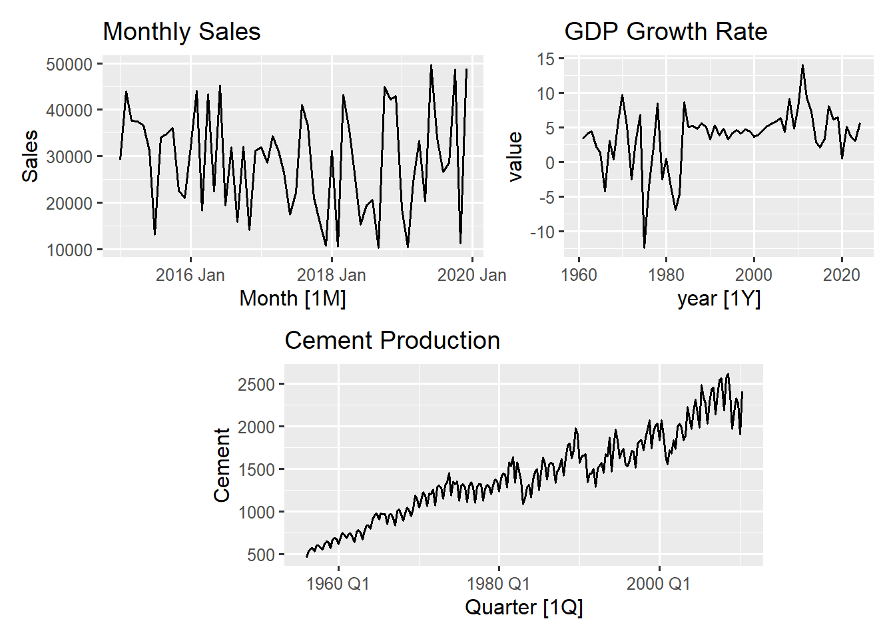
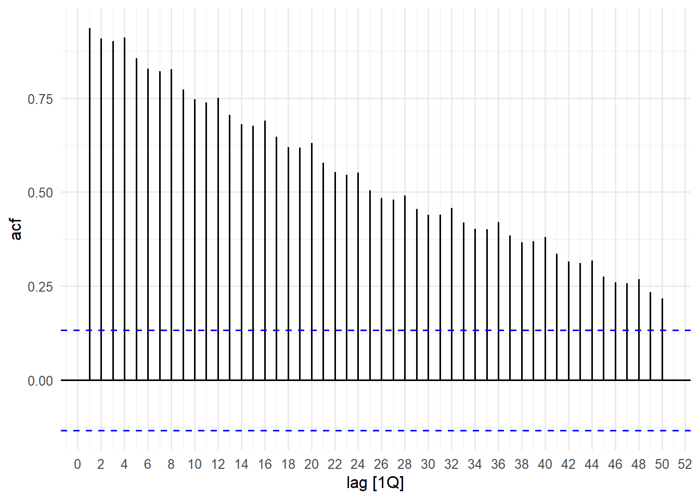
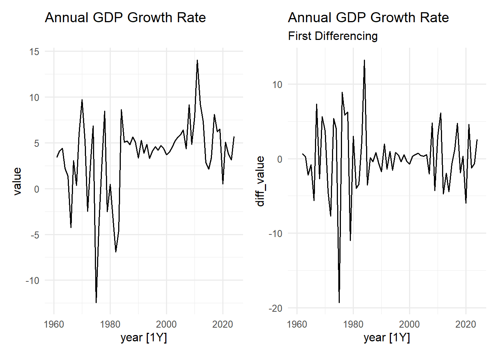
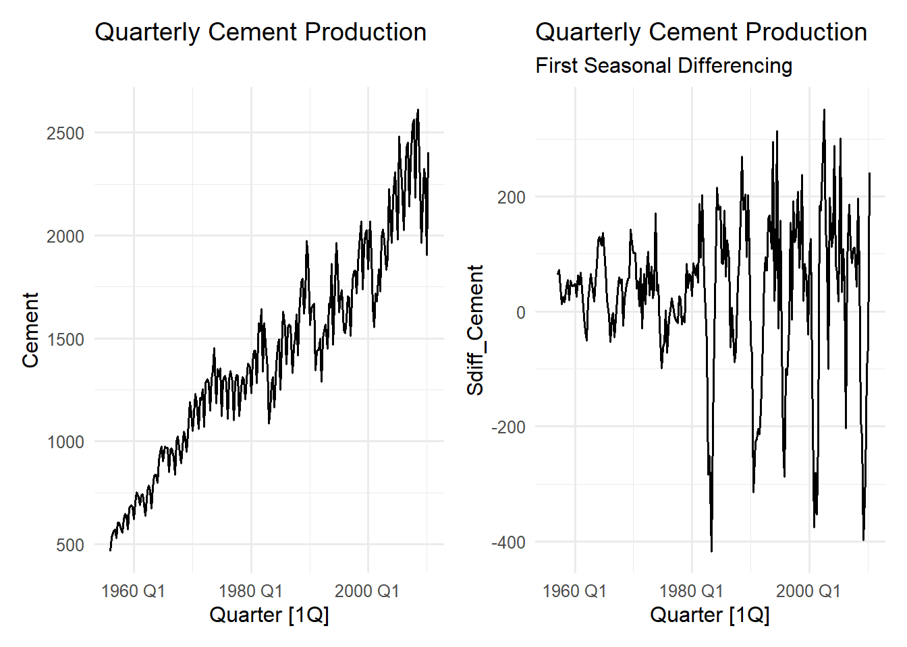

12 Checking for Stationarity
Stationarity is one of the most important concepts in time series forecasting. A stationary time series has statistical properties – mean, variance, and covariance – that do not change over time. Think of it as a series that fluctuates around a constant mean with consistent variability and where the relationship between observations depends only on how far apart they are in time, not on when you look at them.
Most classical forecasting methods (like ARIMA models) assume stationarity because it makes the series predictable. A trending series that is constantly rising or falling is fundamentally unpredictable in the long run, it would eventually go to infinity! By making our series stationary, we transform it into something that can be reasonably modelled and forecasted.
12.1 Understanding Stationarity Through visualisation
A stationary series would fluctuate around a horizontal linev (like random noise), while a non stationary series show clear upward or downward trend. The most direct way to assess staionarity is by examining the series plot for a persistent trend. We will start by visually examining some of our time series datasets
Visually the monthly sales plot and the GDP growth plot are the closest to meeting the visual criteria for stationarity. The monthly sales series fluctuates roughly around a constant level \(~30,000\) throughout the time period, the magnitude of the fluctuations remains relatively stable and there is nor apparent trend. With the GDP growth rate, although the series fluctuates around a mean close to zero, the magnitude appears to be changing with early periods (1960-1980) having higher volatility and then stabilising with lower volatility later on.
The Cement production plot has a clear sustained upward trend with the magnitude of fluctuations visibly increasing as the level increases, particularly after 1980. This violates the stationarity assumption.
An ACF plot can also provide strong visual clues about whether a time series is stationary or non-stationary, although it is not a formal statistical test. If the autocorrelations decrease very slowly towards zero, its suggests the series has a trend and is likely non-stationary.

The plot shows that the correlation bars remain significantly high for a long time before slowly moving towards zero. This tells us the series has a trend and so it is likely not stationary, reinforcing our earlier visual inspection in Figure 12.1.
12.2 Statistical Tests for Stationarity
While visual inspection is valuable, statistical unit root tests provide objective confirmation of non-stationarity. The most common test is the Augmented Dickey-Fuller (ADF) test, however the KPSS (Kwiatkowski-Phillips-Schmidt-Shin) test, which is available in the feasts package is also widely used.
# check stationarity with kpss test
aus_production |>
features(Cement, feature = unitroot_kpss)# A tibble: 1 × 2
kpss_stat kpss_pvalue
<dbl> <dbl>
1 4.11 0.01sales_ts |>
features(Sales, feature = unitroot_kpss)# A tibble: 1 × 2
kpss_stat kpss_pvalue
<dbl> <dbl>
1 0.172 0.1gh_ts |>
filter(indicator_name == "Annual GDP growth rate") |>
features(value, features = unitroot_kpss)# A tibble: 1 × 3
indicator_name kpss_stat kpss_pvalue
<chr> <dbl> <dbl>
1 Annual GDP growth rate 0.637 0.0192The KPSS test has the following hypothesis:
- Null Hypothesis \((H_{0})\): The series is stationary
- Alternative Hypothesis \((H_{a})\): The series is non-stationary (a unit root exists)
Therefore a low p-value (<0.05) from the KPSS test leads you to reject the Null Hypothesis and conclude the series is non-stationary.
The code applies the unitroot_kpss feature to the three previously examined series. The p-value for the cement production series (0.01) and GDP growth rate series (0.019) are less than 0.05 which confirms non-stationarity. The monthly sale series has a large p-value (0.1) and so the Null Hypothesis cannot be rejected for that series (Series is stationary).
Once the statistical test has proven non-stationarity, we must find out how many times the series needs to be differenced to become stationary. The unitroot_ndiffs feature automatically determines the minimum number of regular (non-seasonal) differences required.
# determine ndiffs for cement production and GDP growth rate
ndiff_gdp <- gh_ts |>
filter(indicator_name == "Annual GDP growth rate") |>
features(value, features = unitroot_ndiffs) |>
pull(ndiffs)
ndiff_cement <- aus_production |>
features(Cement, feature = unitroot_ndiffs) |>
pull(ndiffs)Number of differencing for cement production: 1Number of differencing for GDP growth rate: 1Both the GDP growth rate and cement production series returned an ndiffs value of 1, implying that a single first differencing should be enough to remove the non-seasonal trend
12.3 Applying Differencing to Achieve Stationarity
Differencing calculates the change from one period to the next, effectively removing a linear trend. The first difference is defined as: \(\Delta Y_t=Y_t-Y_{t-1}\).
12.3.1 Non-Seasonal Differencing
The GDP growth rate series requires one non-seasonal difference to address its mild trend non-stationarity.
# Apply first differencing to gdp growth rate and compare with original
first_diff_gdp <- gh_ts |>
filter(indicator_name == "Annual GDP growth rate") |>
select(indicator_name, year, value) |>
mutate(diff_value = difference(value))
p_orig <- first_diff_gdp |>
autoplot(value, linewidth = 0.7) +
ggtitle("Annual GDP Growth Rate")
p_diff <- first_diff_gdp |>
autoplot(diff_value, linewidth = 0.7) +
ggtitle('Annual GDP Growth Rate',
subtitle = 'First Differencing')
p_orig + p_diff

The plot of the First Differencing shows a series that fluctuates around zero with an even more stable mean than the original series. The differencing successfully removed any remaining low-frequency correlation, making the series more suitable for modelling
Tip
You can verify if the differenced series is now stationary by performing the unitroot_kpss test on the differenced series and noting the p-value
12.3.2 Seasonal Differencing
For series that exhibit strong seasonality (like the quarterly cement production that shows non-stationarity, we may need seasonal differencing. We first determine the number of seasonal differences needed.
# confirm unit root differencing
aus_production |>
features(Cement, feature = unitroot_nsdiffs)# A tibble: 1 × 1
nsdiffs
<int>
1 1The unitroot_nsdiffs feature confirms that one seasonal difference is needed. We now proceed to perform seasonal differencing. We use the difference() function with the lag parameter set to the seasonal period (4 for quarterly data). \[
\Delta Y_t=Y_t-Y_{t-4}
\]
# Apply seasonal differencing (lag = 4 for quarterly data)
seasonal_diff_cement <- aus_production |>
select(Quarter, Cement) |>
mutate(Sdiff_Cement = difference(Cement, lag = 4))
p_orig <- seasonal_diff_cement |>
autoplot(Cement, linewidth = 0.7) +
ggtitle("Quarterly Cement Production")
p_diff <- seasonal_diff_cement |>
autoplot(Sdiff_Cement, linewidth = 0.7) +
ggtitle('Quarterly Cement Production',
subtitle = 'First Seasonal Differencing')
p_orig + p_diff

The resulting plot shows a dramatic different series. The upward trend and seasonal cycle have been removed, leaving a series that fluctuates around zero (although some noticeably amplified fluctuations exist). We can always verify stationarity after the seasonal differencing to check if non-seasonal differencing will be required again.
# verify_stationarity after seasonal differencing
seasonal_diff_cement |>
features(Sdiff_Cement, features = unitroot_kpss)# A tibble: 1 × 2
kpss_stat kpss_pvalue
<dbl> <dbl>
1 0.0263 0.1The high p-value (which is \(\gt0.05\)) confirms that the series is now stationary. Since the non-seasonal trend was also removed by the seasonal differencing, no further differencing is required.
12.4 Interpreting Differenced Series
Understanding what differenced values represent is crucial for interpretation. When a series is differenced, the new value is no longer the raw measurements but the change between the current observation and the previous one. Understanding this change is critical for correctly interpreting model results and forecasts
# demonstrate interpretation of differencing
interpretation_example <- gh_ts |>
filter(indicator_name == "Annual GDP growth rate") |>
slice(1:10) |> # first 10 observations
mutate(
original = value,
difference = difference(value),
interpretation = if_else(
!is.na(difference),
paste("Change from previous year:", round(difference, 2)),
"Initial value"
),
) |>
select(year, indicator_name, original, difference, interpretation)| year | indicator_name | original | difference | interpretation |
|---|---|---|---|---|
| 1960 | Annual GDP growth rate | NA | NA | Initial value |
| 1961 | Annual GDP growth rate | 3.4296740 | NA | Initial value |
| 1962 | Annual GDP growth rate | 4.1091586 | 0.6794846 | Change from previous year: 0.68 |
| 1963 | Annual GDP growth rate | 4.4059742 | 0.2968156 | Change from previous year: 0.3 |
| 1964 | Annual GDP growth rate | 2.2093275 | -2.1966467 | Change from previous year: -2.2 |
| 1965 | Annual GDP growth rate | 1.3689989 | -0.8403286 | Change from previous year: -0.84 |
| 1966 | Annual GDP growth rate | -4.2582904 | -5.6272892 | Change from previous year: -5.63 |
| 1967 | Annual GDP growth rate | 3.0753641 | 7.3336544 | Change from previous year: 7.33 |
| 1968 | Annual GDP growth rate | 0.3688603 | -2.7065037 | Change from previous year: -2.71 |
| 1969 | Annual GDP growth rate | 6.0061750 | 5.6373146 | Change from previous year: 5.64 |
The table we have created shows the relationship between the original GDP growth values and their first differencing values. The difference column measures the change in the rate of growth in percentage points from one year to the next. Example in row 6, the growth rate decreased by 5.63 percentage points leading to a sharp recession from 1.37% in 1965 to -4.2% in 1966.
Forecasting a differenced series means forecasting the change in the original value, not the original value itself. The final forecasted change must be added back to the last known raw value \((Y_t)\) to get the final forecast \((\hat{Y}_{T+1})\).
While differencing removes trends it is important to know that too much differencing can introduce unnecessary complexity and reduce forecast accuracy. The goal is the minimum differencing needed to achieve stationarity.
12.5 Summary
This chapter has taught how and what differencing can achieve in your time series data - that a successfully differenced series should fluctuate around a stable mean with consistent variance. You have also discovered that first differences represent period-to-period changes, making them interpretable as growth rates or absolute changes and second differencing is more harder to interpret but may be necessary for more complex trends. For a data with strong seasonality, both regular and seasonal differencing might be needed. Once stationarity is achieved your series is ready for models that assume constant statistical properties over time.
You have also seen in this chapter how to diagnose a non-stationarity series through both visual inspections and statistical testing, and how to verify stationarity by conducting statistical confirmations.
In the next chapter, we will explore data splitting of time series; how it temporal splitting differs from random sampling and best practices in determining optimal split points and also learn how techniques in time series cross-validation.